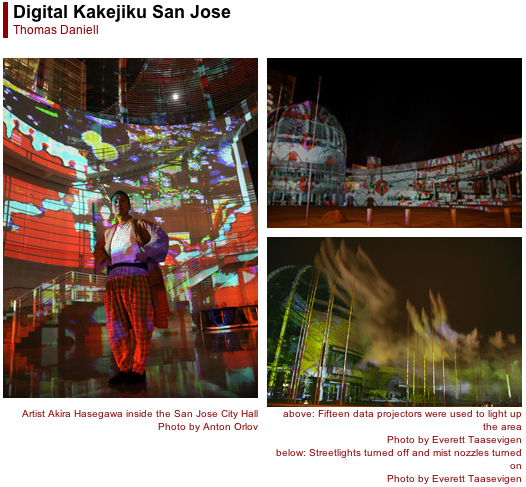

 Thomas Daniell Over the second week of August, all of downtown San Jose -- self-proclaimed capital of California's Silicon Valley -- was transformed into an exhibition venue for electronic and new media art. This was the inaugural ZeroOne art festival, timed to coincide with the 13th annual symposium of the ISEA (Inter-Society for the Electronic Arts), an organization founded in the Netherlands in 1990 to foster "interdisciplinary academic discourse and exchange among culturally diverse organizations and individuals working with art, science, and emerging technologies."
Although there were contributions from all over the world, the theme for ISEA2006 was the Pacific Rim, resulting in a strong presence of artists from countries such as Australia, New Zealand, and, of course, Japan. Composer Ryoji Ikeda presented two audiovisual pieces: C4I and datamatics, the former originally commissioned by YCAM (Yamaguchi Center for Arts and Media), and the latter commissioned specifically for ZeroOne. The Breadboard Band, a group led by Masayuki Akamatsu of IAMAS (International Academy of Media Arts and Sciences, located in Gifu), gave an improvisational outdoor concert using ad hoc circuit boards to produce pulses and washes of raw electronic sound, constantly rewiring their equipment live on stage. The centerpiece of the entire festival was digital artist Akira Hasegawa's nightly illumination of the new San Jose City Hall. Completed in October 2005 and designed by Richard Meier, the focus of the building is a symbolic rotunda in the form of a glass dome, with a gently curving wall of beige stone behind it. Each evening for the duration of the festival, the city turned off the streetlights and turned on the mist nozzles, while Hasegawa used 15 data projectors of 10,000 lumens each to light up the area with gradually changing abstract images of his own creation. Hundreds, if not thousands, of people filled the plaza in front of the dome, traffic slowed in wonderment, and the city center came alive. Indeed, the night after the festival had finished, hopeful crowds were still gathering in the plaza. The installation was another example of Hasegawa's ongoing Digital Kakejiku (D-K) project. Over the last few years, he has similarly illuminated various locales across Japan and China, not to mention the Acropolis in Athens. The method is always the same, but the result is always a site-specific installation. D-K is a method of subtly transforming an existing environment, analogous to the kakejiku from which it takes its name -- the traditional Japanese hanging scroll, changed in response to the season, the weather, or the guest. Although D-K images are randomly changed at sixty-second intervals, the transitions are imperceptible. Successive images are smoothly blended into one another by a computer that constantly interpolates and updates the projected pixels. The original still images merge into an uninterrupted flux; at a glance, it seems static, but look away for a minute and it is entirely transformed. Not unlike watching a never-ending sunset, the D-K audience tends to fall into a meditative state. Many are content to sit and watch for hours. One evening of the festival, the overwhelming serenity of D-K was emphasized by contrast with the equally overwhelming performance art of Survival Research Laboratories occurring a few blocks away. Featuring enormous gladiatorial robots battering and burning each other to destruction over the course of a show, accompanied by stunningly loud sounds, SRL performances have a story of sorts, and most definitely a conclusion, but D-K has neither -- simply an indeterminate, timeless ambience. Members of the San Jose City Council are now discussing the possibility of making D-K permanent. It is hard to think of a more appropriate city to have a significant piece of digital art as its centerpiece -- and beyond the obvious aesthetic merits, Hasegawa's work was able to transform a deserted downtown plaza into a vibrant, popular public space. |